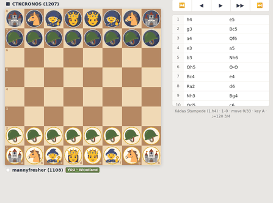

Sixteen real games, each one narrated move by move by a cast of characters who follow their pieces by identity — so the fox that started on a2 is still the fox forty moves later, wherever it ended up. Step through with l and h. No plugin manager, no dependencies, no leaving the terminal.
# one line, no install vim -c 'source chess_emoji.vim' -c 'ChessEmoji crawlnamed' # or use the launcher ./chess-emoji queendab # prove all sixteen games still parse vim -u NONE -N -es -c 'source chess_emoji.vim' \ -c 'for l in g:ChessEmojiSelfTest() | echo l | endfor' -c 'qa!'
Emoji width varies by terminal, so the
board locks its grid with setcellwidths() and draws with no cell separators. Any modern
terminal with an emoji-capable monospace font renders it square. Press t for plain
figurines if the full emoji board is too loud to read.
| key | game | you | result | ends |
|---|---|---|---|---|
| queendab | The Queen Dab — vs +482 Elo | White | 1–0 | Qxb7# |
| kadas | Kádas Stampede — 1.h4, queen out on move 6 | White | 1–0 | Qg7# |
| roundup | The Kádas Roundup | White | 1–0 | Qxe7# |
| houdini | The Kádas Houdini | White | 1–0 | Qxg7# |
| crawlnamed | The Creepy Crawly, Named — Lichess christened the formation | White | 1–0 | Qa8# |
| crab | The Crab — both rook pawns as claws | White | 1–0 | Nh6# |
| deadmove2 | Dead on Move 2 — mated-in-2 on move two, won on move twenty | Black | 0–1 | Qh1# |
| carr | The Carr Crash — 1…h6 | Black | 0–1 | Rxh2# |
| crabblack | The Crab, as Black | Black | 0–1 | R6d2# |
| goldsmith | Goldsmith Defense | Black | 0–1 | Bf3# |
| fathersday | Father's Day Surprise | Black | 0–1 | Nf3# |
| horsey | Horsey Surprise — White resigns | Black | 0–1 | Qxf4 |
| schroflag | Schrödinger's Flag — 1…h5 | Black | 0–1 | Qxg1 |
| scandi | The One That Got Away — up a piece twice, lost | Black | 1–0 | Qb4# |
| stalemategambit | The Stalemate Gambit — down twelve pawns, saved on the last move | White | ½–½ | stalemate |
| daisies | We're No Daisies — 135 plies, mates missed by both sides | Black | ½–½ | stalemate |
Adding a game is one object: white, black, hero colour,
opening, result, movetext, and a special map of ply → narration for the
turning points. Register it in the self-test loop and it is checked forever after — ply count,
final move, and which piece delivered it.

Roles, terrain, and music. The time signature is inferred from the moves — a quiet maneuvering game breathes in 3/4, a tactical scramble lurches into 7/8. Exports MIDI, WAV, and a world file. Installs to a phone home screen.
The board as a voxel landscape — held squares rise as elevation, the contested seam floods
pond→ocean by area. Minecraft and Roblox exporters from one core.js.
Every piece rebuilt as a voxel standee from its real emoji glyph, tracked from its home square, with cast-voiced narration.
The grid has you. ATL Underground against the Gridlock Authority, narrated in falling green code, cyan towers against magenta.
A chess-world v1 export becomes a Minecraft datapack and a Roblox builder. Zero
dependencies — including its own store-only zip writer. Runs in the browser and in Node.
What is actually doing the labeling: relaxation labeling, sparse factors, arbitrary constraint order, a noise label for pieces doing nothing.
Every piece on the board is an object; every tactical job — attacker, defender, controller, outpost, runner, tactic — is a label. Nothing is classified alone: the labels settle by mutual consistency, the way relaxation labeling settles anything. Pieces that end up doing nothing get the noise label, and that turns out to be the most honest thing the board can tell you about your position.
Once every piece has a role, the rest follows. Roles become colours. The influence field becomes terrain — water pools where control is contested. Coherence becomes harmony. And the narration knows who did what, because it has been tracking them by identity the whole time.
House voice, since it comes up: creativity and daring over memorizing the engine's preferred move. The games in here are rated-club chess with all the blunders left in — including a mate missed by both sides for seventy moves, and one game where the author was theoretically dead on move two and won anyway.